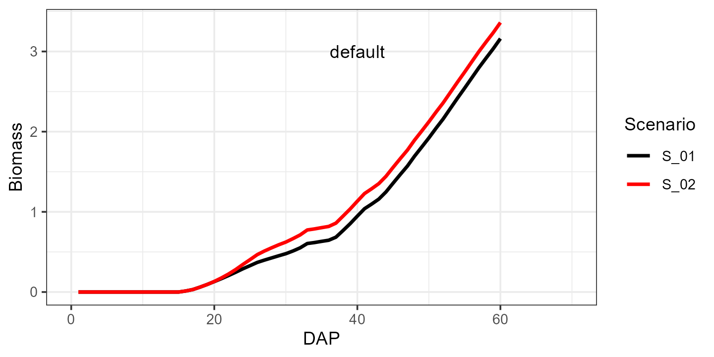

Simulation Example for Spinach
example-simulation.RmdThis is a basic example to run AquaCrop from R for the
spinach crop.
Importantly, the working directory should be set to the folder in
which the aquacrop.exe file is located. This path should also
contain no spaces. For example:
path_to_aquacrop_folder <- "C:/users/username/AquaCrop71/".
library(AquacropOnR)
library(tidyverse)
setwd(dir = path_to_aquacrop_folder)With the package comes an example list with default crop parameters
for quinoa and spinach. To make this
list for your own crop, you need an AquaCrop cropfile
(YourCrop.CRO) whose path should be input in the
read_CRO() function:
Once you have the list with default crop parameter values, you can
design the scenario’s for which you want to run AquaCrop. The
AquacropOnR package provides a function to design the
scenario’s: design_scenario(). The arguments in this
function have the following meaning:
-
nameis a character vector of names for the scenario’s. -
Input_Dateis a Date vector that indicates the start point of the meteo files (Plu,Tnx,ETo)
-
Plant_Dateis a Date vector that defines the planting date in each scenario
-
IRRIis a character vector of the names of the irrigation scenario’s present in theIDcolumn of theIRRI_stibble.
-
Soilis a character vector of the names of the soils present in theIDcolumn of theSOL_stibble. -
Plu,Tnx, andEToare character (vectors) that refer to the names ofRobjects, that hold the daily data for precipitation, temperature and reference evapotranspiration, respectively.
IMPORTANT:
- The Scenario_s tibble must be named
Scenario_sand must have the columns (variables)Scenario,Input_Date,Plant_Date,IRRI,SoilandMeteo.
- The irrigation tibble must be named
IRRI_sand must have the columnsID,Timing,DepthandECw. Values of theIDcolumn are given as input to theIRRIargument in thedesign_scenario()function.
- The soil tibble must be named
SOL_sand must have the columnsID,Horizon,Thickness,SAT,FC,WP,Ksat,PenetrabilityandGravel. Values of theIDcolumn are given as input to theSoilargument in thedesign_scenario()function.
- The precipitation tibble can be named as you want, but its name is
the input to the
Pluargument in thedesign_scenario()function. This tibble must have the columnsDAYandPLU.
- The reference evapotranspiration tibble can be named as you want,
but its name is the input to the
EToargument in thedesign_scenario()function. This tibble must have the columnsDAYandETo.
- The temperature tibble can be named as you want, but its name is the
input to the
Tnxargument in thedesign_scenario()function. This tibble must have the columnsDAY,TMAXandTMIN. - The Management tibble must be named
FMAN_s.
Examples of these tibbles are available from the package.
Scenario_s <- design_scenario(name = c("S_01", "S_02"),
Input_Date = as.Date("2019-01-01"),
Plant_Date = as.Date(c("2019-04-01", "2019-04-01")),
IRRI = c("IRRI_01", "IRRI_02"),
Soil = "Soil_01",
Plu = "Plu_01",
Tnx = "Tnx_01",
ETo = "ETo_01",
FMAN = "default",
GWT = 2.0)The Scenario_s tibble should look like this:
#> # A tibble: 2 × 10
#> Scenario Input_Date Plant_Date IRRI Soil Plu Tnx ETo FMAN GWT
#> <chr> <date> <date> <chr> <chr> <chr> <chr> <chr> <chr> <dbl>
#> 1 S_01 2019-01-01 2019-04-01 IRRI_01 Soil_01 Plu_01 Tnx_01 ETo_… defa… 2
#> 2 S_02 2019-01-01 2019-04-01 IRRI_02 Soil_01 Plu_01 Tnx_01 ETo_… defa… 2The FMAN_s tibble should look like this:
#> # A tibble: 1 × 10
#> ID mulch_perc mulch_eff fert_stress soil_bunds runoff_aff CN_eff weed_clo
#> <chr> <dbl> <dbl> <dbl> <dbl> <dbl> <dbl> <dbl>
#> 1 default 0 50 0 0 0 0 0
#> # ℹ 2 more variables: weed_mid <dbl>, weed_cc <dbl>We can make an irrigation input tibble as follows:
IRRI_s <- tibble(ID = c("IRRI_01", "IRRI_02"), Timing = c(20, 20), Depth = c(0,25), ECw = c( 0, 0))
IRRI_s
#> # A tibble: 2 × 4
#> ID Timing Depth ECw
#> <chr> <dbl> <dbl> <dbl>
#> 1 IRRI_01 20 0 0
#> 2 IRRI_02 20 25 0For this example we will use the data for soil, precipitation, temperature and reference evapotranspiration that comes with the package. These tibbles should be formatted as presented below.
#> # A tibble: 1 × 9
#> ID Horizon Thickness SAT FC WP Ksat Penetrability Gravel
#> <chr> <dbl> <dbl> <dbl> <dbl> <dbl> <dbl> <dbl> <dbl>
#> 1 Soil_01 1 4 41 22 10 1200 100 0
#> # A tibble: 6 × 2
#> DAY PLU
#> <dbl> <dbl>
#> 1 1 0.4
#> 2 2 0.7
#> 3 3 0.8
#> 4 4 0.2
#> 5 5 0
#> 6 6 0.3
#> # A tibble: 6 × 3
#> DAY TMAX TMIN
#> <dbl> <dbl> <dbl>
#> 1 1 9.3 7.2
#> 2 2 7.4 5
#> 3 3 6.8 2.1
#> 4 4 6.5 2.5
#> 5 5 6.5 2.9
#> 6 6 7.4 4.3
#> # A tibble: 6 × 2
#> DAY ETo
#> <dbl> <dbl>
#> 1 1 1.03
#> 2 2 1.17
#> 3 3 0.743
#> 4 4 0.887
#> 5 5 0.778
#> 6 6 0.695Then it is crucial to create the correct AquaCrop path, while
checking the required folders and choosing which daily outputs to
produce. Therefore the package has the function
path_config(). Make sure your path ends with a “/”. For
example:
path_to_aquacrop_folder <- "C:/users/username/AquaCrop71/".
The Daily_output argument lets you choose which output type
to return from the simulation (see Codes in AquaCrop manual
p21-25). Currently the function has only been tested with
Daily_output = c(1,2).
AQ <- path_config(AquaCrop.path = path_to_aquacrop_folder, Daily_output = c(1,2))Finally, we can run AquaCrop using the
aquacrop_wrapper() function and display a plot. The
param_values argument is used to modify crop parameters
from the default, which is the list provided as input to the
defaultpar argument inside the model_options
list. situation takes a vector of characters, that
correspond to the Scenario variable in the
Scenario_s tibble.
Let us first run the simulation with the default parameters for spinach:
default <- aquacrop_wrapper(param_values = list(),
situation = c("S_01","S_02"),
cycle_length = 70,
model_options = list(AQ = AQ, defaultpar = Spinach, output = "morris"))
ggplot(mapping = aes(x=DAP, y=Biomass)) +
# ylim(0, 3.5) +
geom_line(data = default, aes(group = Scenario, color = Scenario),linewidth = 1) +
geom_text(aes(x=40, y=3, label = 'default'), color = "black") +
xlim(0, 70) +
scale_color_manual(values = c("black", "red")) +
theme_bw()
And now let’s see what happens when we increase the canopy growth
coefficient cgc from 0.15 to 0.18:
modified <- aquacrop_wrapper(param_values = list(cgc = 0.18),
situation = c("S_01", "S_02"),
cycle_length = 70,
model_options = list(AQ = AQ, defaultpar = Spinach, output = "morris"))
ggplot() +
ylim(0, 3.5) +
geom_line(data = default, aes(x=DAP, y=Biomass, group = Scenario, color = Scenario),linewidth = 1) +
geom_line(data = modified, aes(x=DAP, y=Biomass, group = Scenario, color = Scenario),linewidth = 1, linetype = 2) +
geom_text(aes(x=40, y=3, label = 'default'), color = "black", hjust = 0) +
geom_text(aes(x=40, y=2.8, label = 'modified'), color = "black", hjust = 0) +
geom_segment(mapping = aes(x = 34, xend = 39, y = 3, yend = 3), color = 'black', linewidth = 1, linetype = 1) +
geom_segment(mapping = aes(x = 34, xend = 39, y = 2.8, yend = 2.8), color = 'black', linewidth = 1, linetype = 2) +
xlim(0, 70) +
scale_color_manual(values = c("black", "red")) +
theme_bw()A list of parameters with their explanation can be found in the
vignette("crop-parameters").